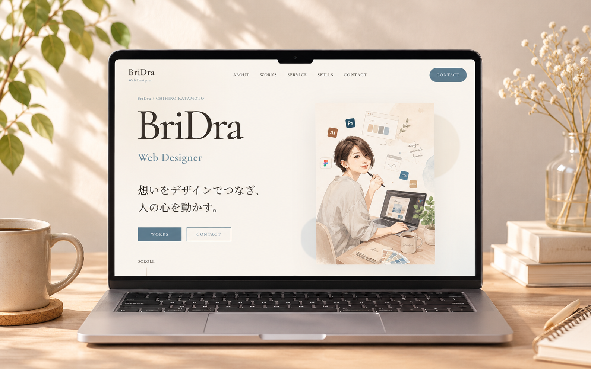

統一感のある配色と文字
余白・明朝体・落ち着いたカラーでブランドの雰囲気を表現しました。
Project 02 / Website Design & Coding
自身の作品やサービスを伝えるために、デザインからHTML・CSS・JavaScriptでの実装まで行ったポートフォリオサイトです。

Website Preview
実際のポートフォリオサイトの画面です。
Overview
Concept
作品の魅力を、
余白と動きで伝える。
名刺・Web・バナー・SNS画像などの制作実績を見やすく整理し、依頼前にデザインの方向性や対応範囲が伝わることを目指しました。
アイボリーとベージュを基調に、くすみブルーをアクセントとして使用。上品で落ち着いた印象に統一しています。
Design Points
余白・明朝体・落ち着いたカラーでブランドの雰囲気を表現しました。
WORKS一覧から各詳細ページに進める構成にしています。
画面幅に応じた表示調整と、スクロール演出・カーソル表現を取り入れています。